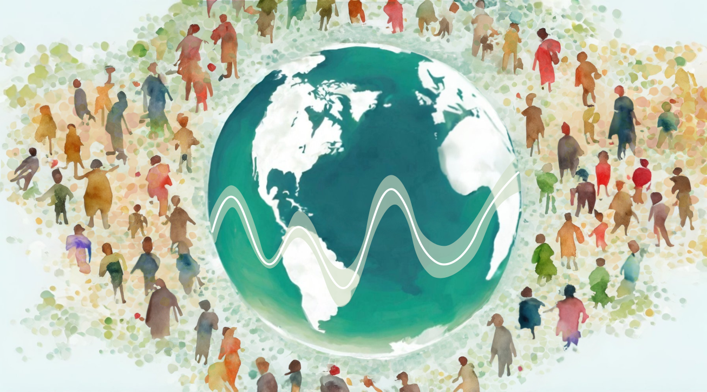

|
The CHORDS Platform provides resources aimed at making it easier for researchers to study the effects of external, place based environmental exposures on health outcomes as well as supporting research into the impact of health interventions on well-being. Place-based exposures are varied and can include pollution from land, air, and water source; natural phenomena such as the heat, humidity, and pollen; extreme events such as drought and wildfires; as well as factors such as crime and the availability of green space that result from our social and built environment. The CHORDS Platform emphasizes research into the impacts of climate change, with a focus on wildfires, although many of the resources provided here are applicable across a breadth of scenarios. |

Facilitating the Linking of Environmental and Health Data to Advance Patient-centered Outcomes Research |
The CHORDS Platform aims to lower the bar for such research by providing:
- A glossary of terms to aid researchers seeking to understand the space
- A catalog of data resources, data sets, and tools for researchers to use
- Precomputed data sets that are aligned to common spatial and temporal dimensions for use by researchers
- Examples of impactful studies to guide researchers
- Use cases and vignettes of using tools to conduct place-based health studies